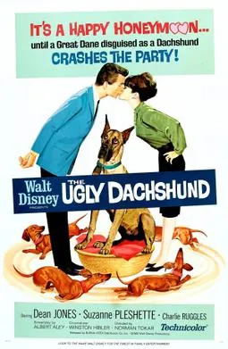

The genetics
There is no genetic science in this Walt Disney comedy; it plays with nature versus nurture through a dog. Brutus is a Great Dane by birth but raised by a dachshund mother among dachshund puppies, and for much of the film upbringing wins: he walks, behaves and even thinks of himself as a dachshund. In the end the film favours nature: at the dog show, among other Great Danes, he finds his true identity and stands tall like one. The joke rests on real facts of animal breeding: dog breeds differ greatly in size and build because of their genes, whoever raises them, while much of a dog's behaviour is learned from the animals and people around it. A puppy nursed by a mother of another breed grows into the size and shape of its own breed, as Brutus does.
The story
Mark and Fran Garrison, a young married couple, own a prize-winning dachshund, Danke, who gives birth to three female puppies. Their vet, Dr. Pruitt, persuades Mark to take home a Great Dane puppy that its own mother has rejected for lack of milk, so that Danke can nurse him. Mark names him Brutus. Raised among the dachshunds, Brutus believes he is one of them, imitates their low-slung walk and is blamed for the mischief they lead him into, from splattering paint over Mark's studio to turning a garden party upside down. Fran wants him out of the house until he saves her favourite puppy from a garbage truck. At a dog show Brutus meets other Great Danes, discovers what it is like to be one and wins two blue ribbons, earning the dachshunds' respect.